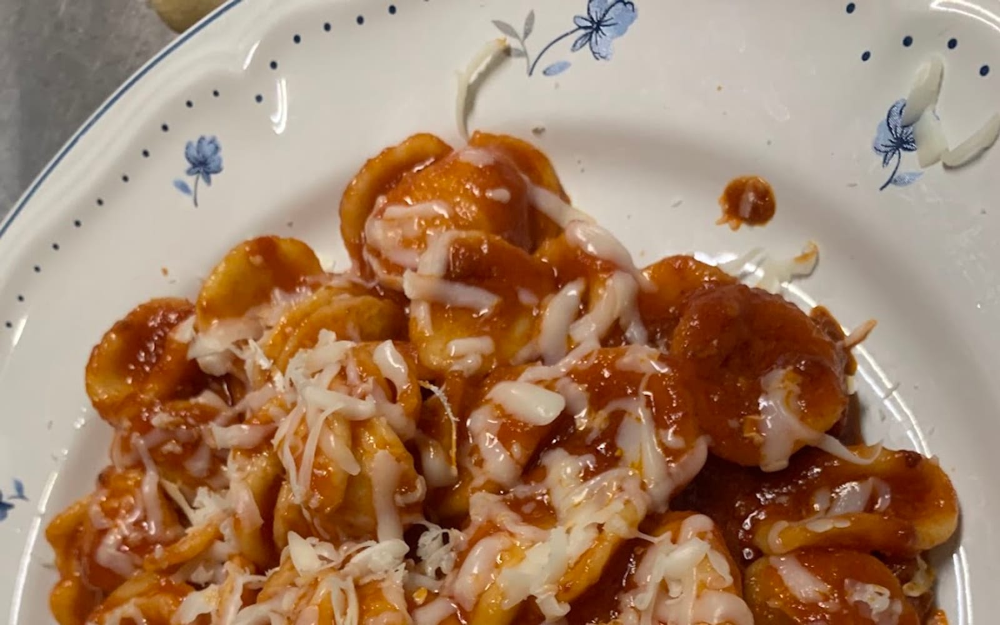
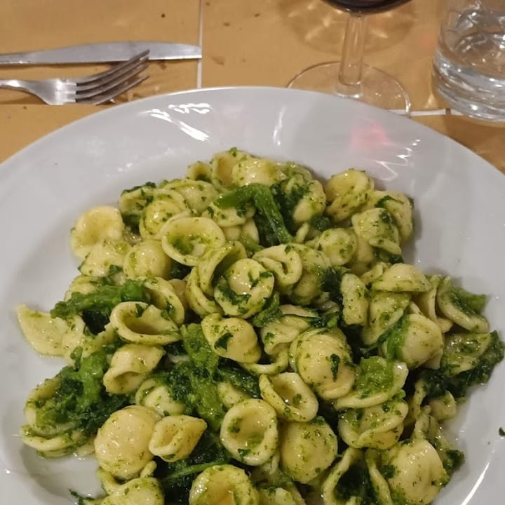
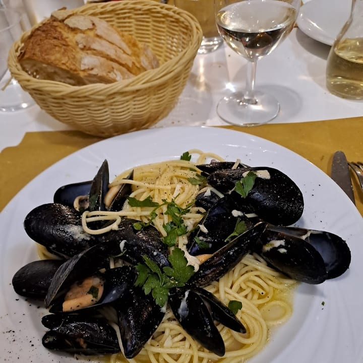
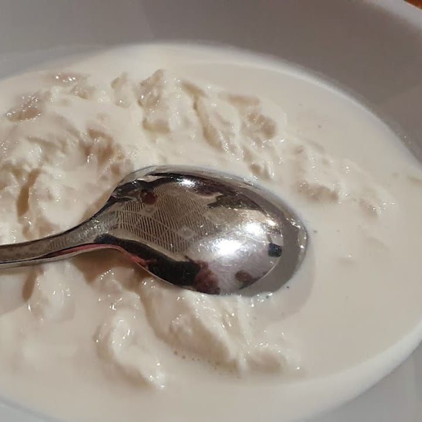
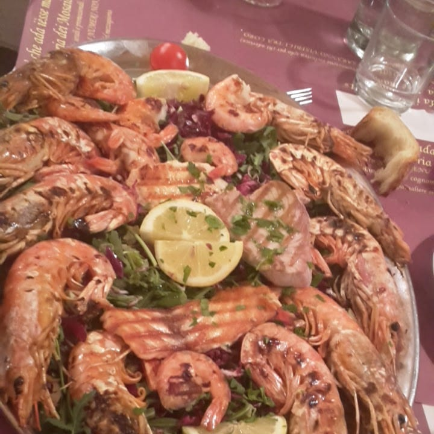
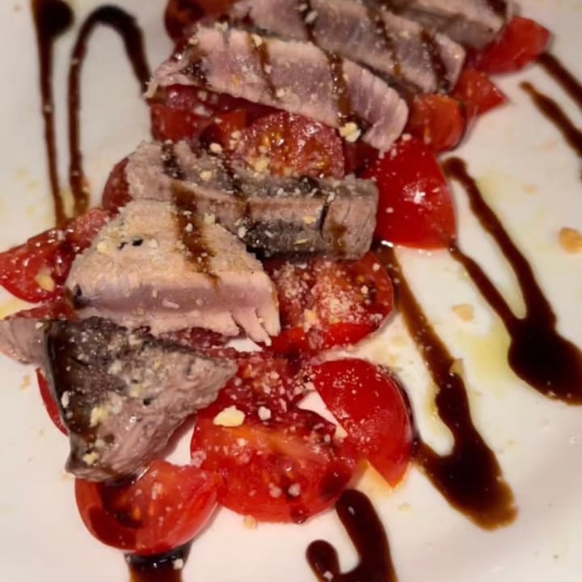
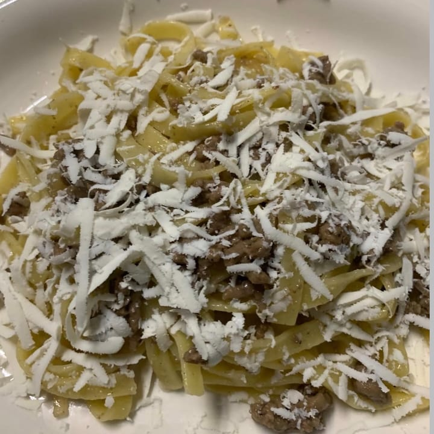
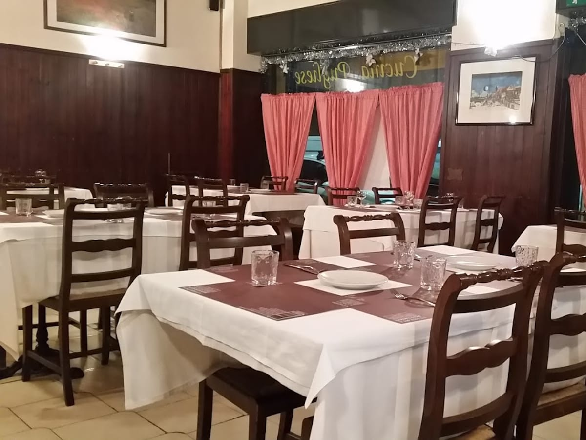
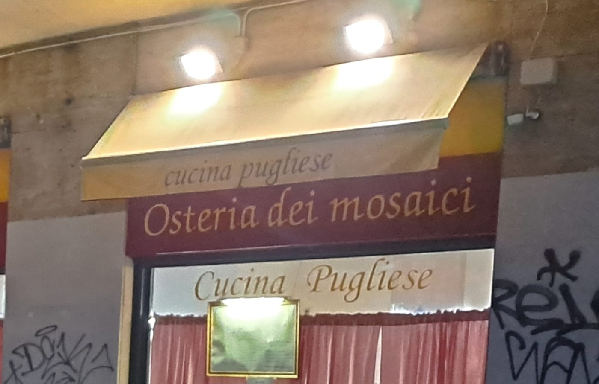

Osteria pugliese di famiglia · Via Paravia 26
Un mosaico di Puglia
Orecchiette, cozze e stracciatella, il menù del giorno a prezzo fisso e l'accoglienza di chi ti fa sentire a casa. La Puglia, a Milano, in Via Paravia.
Ai Mosaici
Ogni piatto, una tessera
Un'osteria pugliese è fatta di tante tessere: le orecchiette tirate a mano, le cozze, la stracciatella che arriva da giù, il menù del giorno, e chi ti accoglie come uno di famiglia. Messe insieme, fanno il mosaico.
Il mosaico dei piatti
I sapori che ti riportano in Puglia






E poi gli antipasti, i secondi di casa e il tiramisù della casa. La carta cambia con la stagione.

Come a casa
Un'osteria di una volta, di famiglia
Qui si entra e ci si sente a casa. La cucina è quella della famiglia, i prodotti arrivano «da giù», e chi serve in sala ti accoglie come uno dei suoi. Un po' retrò, sì — ma quello che conta è il gusto.
Atmosfera semplice, prezzi onesti, il vino della casa. La Puglia portata a Milano, un piatto alla volta.
Dalla cucina
Altre tessere del mosaico
Le voci dei clienti
4,2 su Google, 545 recensioni
«Il mio ristorante pugliese preferito! Prodotti freschi che arrivano da giù. I loro piatti ti riportano in Puglia.»
— Ivana C.
«Famiglia e sentirsi a casa. Sono arrivato da solo e sono stato accolto come uno di famiglia. E si mangia molto bene.»
— Mario V.
«A pranzo menù a prezzo fisso, primo secondo e contorno, acqua vino e caffè. Cucina tradizionale pugliese, tutto ottimo.»
— Luca F.
«Pranzo veloce e genuino, proprietari cordiali, prezzi davvero onesti. Dal momento in cui varchi la soglia, un'atmosfera di casa.»
— Antonino D.
Recensioni reali dei clienti su Google.

Dove & orari
Via Paravia 26, Milano
Aperto ora
- LunedìPranzo 12–14
- MartedìPranzo 12–14
- Mercoledì12–14 · 19:30–22
- Giovedì12–14 · 19:30–22
- Venerdì12–14 · 19:30–22
- Sabato12–14 · 19:30–22
- DomenicaPranzo 12–14
Domande frequenti
Prima di venire
Che cucina fate?
Cucina pugliese di casa: orecchiette (cime di rapa, al pomodoro, al ragù), spaghetti alle cozze, stracciatella, antipasti e i piatti di pesce. Prodotti che arrivano dalla Puglia.
C'è il menù del giorno a pranzo?
Sì: a pranzo, tutti i giorni, c'è il menù a prezzo fisso con primo, secondo, contorno e acqua, vino e caffè inclusi.
Quali sono gli orari?
Pranzo tutti i giorni 12:00–14:00. Cena da mercoledì a sabato 19:30–22:00.
Serve prenotare?
Per pranzo di solito si trova posto; per la cena e nei fine settimana meglio chiamare al 331 415 7800 e prenotare un tavolo.